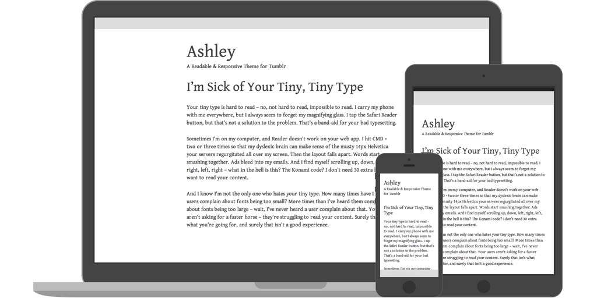

Brent Jackson
Designer & proponent of simplicity.
Geomicons
Geometric Vector Icons
Twipster
Simpler, Readabler Twitter
Ashley
Responsive Tumblr Theme
Heather
Hyperminimal Jekyll Theme
Digist
Gists for Designers
Spectral
CSS Color Palette Creator
SoundRad
SoundCloud Simplified
Microbeats
Beats Created in Under an Hour
Plangular
Customizable SoundCloud Widget